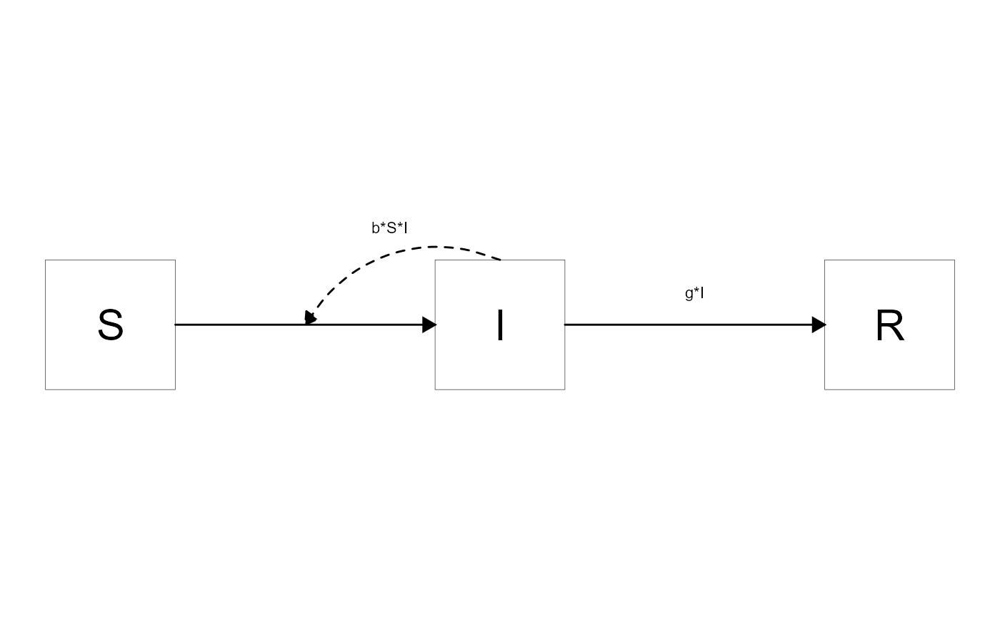
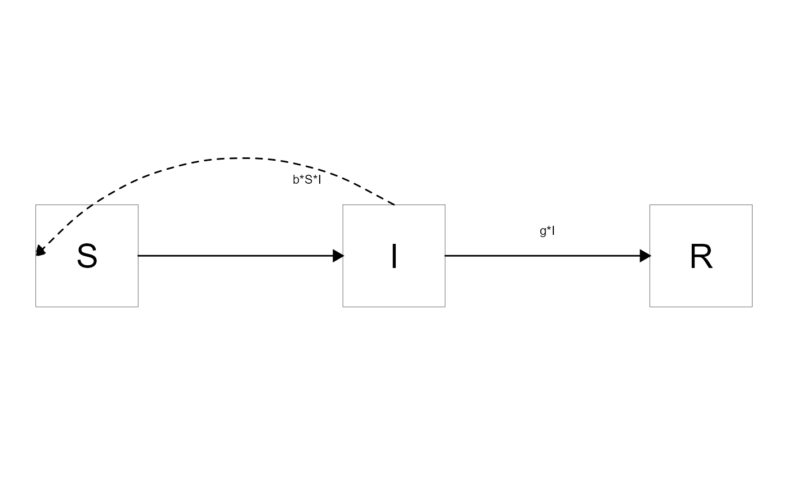

vignettes/D_modify-diagrams-advanced.Rmd
D_modify-diagrams-advanced.RmdWe assume you went through the getting started vignette and also the basic modification vignette. We also expect you learned a bit about know the basics of using modeldiagram. In this vignette, you will learn two advanced ways of customizing your diagram to make it look exactly the way you want to.
make_diagram input structureThe technical details vignette explained the meaning of the different data frames generated by prepare_diagram which are used as inputs into make_diagram. It is possible to modify these data frames before creating the diagram.
Here is an example where we move one of the arrows
varlabels = c("S","I","R")
varnames = c("Susceptible","Infected","Recovered")
flows = list(S_flows = c("-b*S*I"),
I_flows = c("b*S*I","-g*I"),
R_flows = c("g*I"))
mymodel = list(varlabels = varlabels, varnames = varnames, flows = flows)
input_structure_original <- prepare_diagram(mymodel)
make_diagram(input_structure_original)
input_structure_modified <- input_structure_original
input_structure_modified$curved_edges$xend = 2.5
make_diagram(input_structure_modified)
Another, and the most flexible approach, is to modify the ggplot code that produces the diagram. To do this, you can retrieve the full ggplot2 code that creates the diagram and then edit it like you would any ggplot figure.
We’ll illustrate this with a simple example. First, you define your model as above. Once you have your model, you send it to write_diagram, a function that writes the full code needed to generate the diagram. In this example, we are writing the sirmodel model we created above to the current directory and giving the file the specified name.
#write_diagram(filepath = '.', filename = 'sirmodel_diagram_code.R', model = sirmodel)If things worked well, you should get a message telling you the location where the code was saved. This code is completely self-contained, that means you can give it to anyone, who can run it and reproduce your model figure. Having all the code that generates the figure also allows you to do some fine-tuning. We provided hopefully enough comments in the code to make it clear what happens where. That said, to be able to tweak the diagram this way requires being familiar with creating figures in ggplot.
Below is an example where we modify the code we produced above to fine tune some components. We are not showing the full code, but only the parts that are modified.
#old code
#new codeIf you run the script with these modifications, here is the figure.
In general, we recommend implementing the easiest modifications first, even if you know you’ll be editing the ggplot code at the end. Thus, first use the options you can supply through make_diagram to get the diagram as close to what you want as possible. After that, make further modifications by altering the data frame objects generated by prepare_diagram and fed into make_diagram. Once you have gotten as far as you can with these approaches, write the ggplot code to a file and edit further.
PROBLEM: IF WE WRITE GGPLOT CODE TO FILE, HOW DO WE CAPTURE EDITS TO INPUT STRUCTURE?